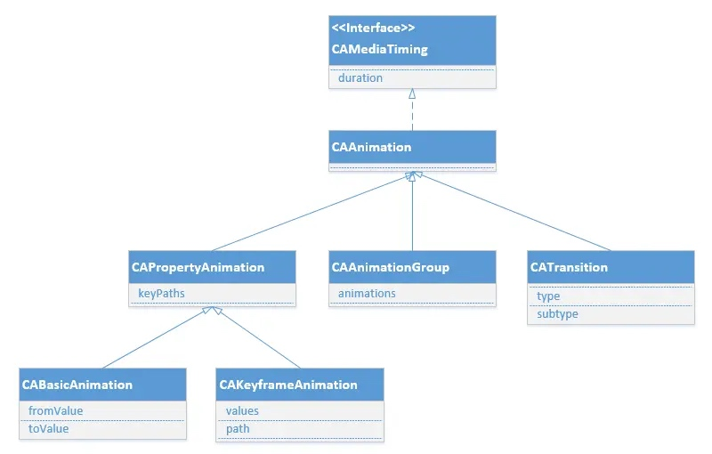

iOS基础动画
iOS开发动画的主要使用的Core Animation 。Core Animation的动画执行过程是在后台操作的.不会阻塞主线程。 Core Animation是直接作用在CALayer上的，并非UIView
动画操作过程
- 创建一个CAAnimation对象
- 设置一些动画的相关属性
- 给CALayer添加动画（addAnimation:forKey: 方法）
- 移除CALayer中的动画（removeAnimationForKey: 方法）
核心动画类
CAAnimation是所有动画对象的父类，实现CAMediaTiming协议，负责控制动画的时间、速度和时间曲线等等，是一个抽象类，不能直接使用。

CAAnimation的子类
- CABasicAnimation 基础动画
- CAKeyframeAnimation 关键帧动画
- CATransition 转场动画
- CAAnimationGroup 组动画
- CASpringAnimation 弹性动画 （iOS9.0之后，它实现弹簧效果的动画，是CABasicAnimation的子类。）
CAMediaTiming协议
CAAnimation的子类都实现CAMediaTiming协议， 该协议有以下属性
@property CFTimeInterval beginTime;
@property CFTimeInterval duration;
@property float speed;
@property CFTimeInterval timeOffset;
@property float repeatCount;
@property CFTimeInterval repeatDuration;
@property BOOL autoreverses;
@property(copy) CAMediaTimingFillMode fillMode;
CAPropertyAnimation
CAPropertyAnimation 继承 CAAnimation, 他有一个keyPath属性
keyPath：通过指定CALayer的一个属性名做为keyPath里的参数(NSString类型)，并且对CALayer的这个属性的值进行修改，达到相应的动画效果。比如，指定@”position”为keyPath，就修改CALayer的position属性的值，以达到平移的动画效果。
CAPropertyAnimation *animation = [CAPropertyAnimation animationWithKeyPath:@"position.y"];
[self.view.layer addAnimation:animation forKey:@"position_y"];
animationWithKeyPath值的总结
| 值 | 说明 | 使用形式 |
|---|---|---|
| transform.scale | 比例转化 | @(0.8) |
| transform.scale.x | 宽的比例 | @(0.8) |
| transform.scale.y | 高的比例 | @(0.8) |
| transform.rotation.x | 围绕x轴旋转 | @(M_PI) |
| transform.rotation.y | 围绕y轴旋转 | @(M_PI) |
| transform.rotation.z | 围绕z轴旋转 | @(M_PI) |
| cornerRadius | 圆角的设置 | @(50) |
| backgroundColor | 背景颜色的变化 | id.CGColor |
| bounds | 大小，中心不变 | [NSValue valueWithCGRect:CGRectMake(0, 0, 200, 200)]; |
| position | 位置(中心点的改变) | [NSValue valueWithCGPoint:CGPointMake(300, 300)]; |
| contents | 内容，比如UIImageView的图片 | imageAnima.toValue = id.CGImage; |
| opacity | 透明度 | @(0.7) |
| contentsRect.size.width | 横向拉伸缩放 | @(0.4)最好是0~1之间的 |
CABasicAnimation 基础动画
@interface CABasicAnimation : CAPropertyAnimation
@property(nullable, strong) id fromValue;
@property(nullable, strong) id toValue;
@property(nullable, strong) id byValue;
@end
fromValue : keyPath相应属性的初始值
toValue : keyPath相应属性的结束值，到某个固定的值（类似transform的make含义）
构建一个基础动画
CABasicAnimation *animation = [CABasicAnimation animation];
animation.keyPath = @"position";
animation.toValue = [NSValue valueWithCGPoint:CGPointMake(100, 100, 50, 50)];
animation.duration = 0.5;
animation.fillMode = kCAFillModeForwards;
animation.removedOnCompletion = NO;
[self.view.layer addAnimation: animation forKey:@"position"];
CAKeyframeAnimation 关键帧动画
@interface CAKeyframeAnimation : CAPropertyAnimation
@property(nullable, copy) NSArray *values;
@property(nullable) CGPathRef path;
@end
每个点连起来的线就是动画轨迹，每个点有对应的位置，对应的时间点。
keyTimes：可以为对应的关键帧指定对应的时间点,其取值范围为0到1.0，keyTimes中的每一个时间值都对应values中的每一帧的时间节点的百分比，当keyTimes没有设置的时候,各个关键帧的时间是平分的
path：可以设置一个CGPathRef、CGMutablePathRef，让层跟着路径移动，path只对CALayer的anchorPoint和position起作用，如果设置了path，那么values、keyTimes将被忽略。
//设置动画属性
CAKeyframeAnimation *animation = [CAKeyframeAnimation animationWithKeyPath:@"position"];
NSValue *p1 = [NSValue valueWithCGPoint:CGPointMake(50, 150)];
NSValue *p2 = [NSValue valueWithCGPoint:CGPointMake(250, 150)];
NSValue *p3 = [NSValue valueWithCGPoint:CGPointMake(50, 550)];
NSValue *p4 = [NSValue valueWithCGPoint:CGPointMake(250, 550)];
animation.values = @[p1, p2, p3, p4];
animation.keyTimes = @[ [NSNumber numberWithFloat:0.0],
[NSNumber numberWithFloat:0.4],
[NSNumber numberWithFloat:0.8],
[NSNumber numberWithFloat:1.0]];
CATransition 转场动画
@interface CATransition : CAAnimation
@property(copy) CATransitionType type;
@property(nullable, copy) CATransitionSubtype subtype;
@property float startProgress;
@property float endProgress;
@end
- type：设置动画过渡的类型
- subtype：设置动画过渡方向
- startProgress：动画起点(在整体动画的百分比)
- endProgress：动画终点(在整体动画的百分比)
构建转场动画
CATransition *ani = [CATransition animation];
ani.type = @"rippleEffect"; //水滴入水振动的效果
ani.subtype = kCATransitionFromLeft;
ani.duration = 1.5;
[self.imageView.layer addAnimation:ani forKey:nil];
CAAnimationGroup 组动画
animations：动画组，用来保存一组动画对象的NSArray
// 2. 向组动画中添加各种子动画
// 2.1 旋转
CABasicAnimation *anim1 = [CABasicAnimation animationWithKeyPath:@"transform.rotation.z"];
// anim1.toValue = @(M_PI * 2 * 500);
anim1.byValue = @(M_PI * 2 * 1000);
// 2.2 缩放
CABasicAnimation *anim2 = [CABasicAnimation animationWithKeyPath:@"transform.scale"];
anim2.toValue = @(0.1);
// 2.3 改变位置, 修改position
CAKeyframeAnimation *anim3 = [CAKeyframeAnimation animationWithKeyPath:@"position"];
anim3.path = [UIBezierPath bezierPathWithOvalInRect:CGRectMake(50, 100, 250, 100)].CGPath;
// 把子动画添加到组动画中
CAAnimationGroup *groupAnima = [CAAnimationGroup animation];
groupAnima.animations = @[ anim1, anim2, anim3];
groupAnima.duration = 2.0;
[self.imageView.layer addAnimation:groupAnima forKey:@"animationGroup"];